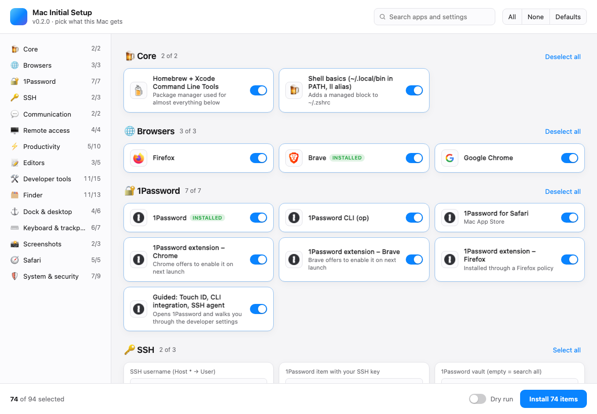

01
Run one command
Paste the command above into Terminal. It downloads the latest code from the public main branch and opens the desktop checklist. No release is needed.
All the apps and settings you want, without a weekend of clicking. Pick your setup, preview the changes, and let your Mac get to work.
curl -fsSL https://raw.githubusercontent.com/ronaldjonkers/mac-initial-setup/main/install.sh | bash
For Apple Silicon and Intel Macs. Requires an admin account and internet. Sign in to the App Store for App Store apps.

01 / THE FLOW
Start from a clean Mac. Keep control over every app and setting along the way.
Paste the command above into Terminal. It downloads the latest code from the public main branch and opens the desktop checklist. No release is needed.
Search apps, flip sections on or off, and fill in details like your SSH username, Git identity and Dock apps.
Use Dry run to see commands without changing anything. When ready, install and follow the live progress log.
THE CONTROL PANEL
The app shows the whole setup as a checklist. Nothing is hidden behind a black box. Select what matters, deselect what doesn't, and search when the list gets long.
Explore the full catalog ↗Interface screenshot from an earlier build. The catalog below reflects the current main branch.02 / THE CATALOG
Browse the exact applications and settings from the current catalog. 144 choices and 8 editable settings, with defaults you can change.
The defaults are opinionated, not mandatory. You can change every switch in the app before installing.
03 / MAKE IT YOURS
Use the checklist for one Mac, or edit the plain Bash catalog to make your own reusable setup.
Search and switch items on or off. Edit your SSH user, Git name and email, PHP version, computer name and Dock list before you press Install.
Fork the repository and edit catalog.sh. Change an item's on or off, adjust a setting, or add your own app.
Run a dry run, select specific item IDs, or set values through environment variables. The same engine powers the app and CLI.
COPY A STARTING POINT
After the first install, run the local script again whenever you want to add or change something.
cd ~/.mac-initial-setup && ./setup.sh --dry-runTHE FINE PRINT
No tracking. No mystery settings. The scripts are open source and the log stays on your Mac.
A Mac with an admin account, internet access and macOS. Both Apple Silicon and Intel are supported. Sign in to the App Store before installing App Store apps.
Yes. Turn on Dry run in the app, or run ./setup.sh --dry-run in Terminal. It prints planned commands without applying them.
Yes. Installed apps are skipped. The run writes a log to ~/Library/Logs/mac-initial-setup.log; failed items can be retried by ID.
Some account sign-ins and browser extensions still need you. macOS also requires you to place Calendar and Reminders widgets through Edit Widgets after the script clears old widgets.
READY WHEN YOU ARE
Pick a few apps. Pick them all. Make it yours.
curl -fsSL https://raw.githubusercontent.com/ronaldjonkers/mac-initial-setup/main/install.sh | bash